Cook¶
The Cook turns the other trades' harvest into the islands' dishes at the Kitchen. A dish feeds you and also gives buffs: extra XP in one trade, more Doriki from fights, slower hunger, and a little Doriki of its own. The fish in a dish decide its quality, and a skilled Cook makes every meal's buffs last longer.
| Workstation | Kitchen |
| How it is made | crafting table, no level: a Cauldron, a Furnace and planks |
| Levels | 1 to 100; recipes up to level 50 |
| XP | every dish cooked: 10 + 2 × the recipe's level |
The Kitchen¶
You build the Kitchen at an ordinary crafting table. Anyone can build one:
| Top | Middle | Bottom |
|---|---|---|
| —, Cauldron, — | Planks, Furnace, Planks | Planks, Planks, Planks |
It faces you when you place it.
Cooking¶
Put the ingredients into the Kitchen and take out the dish. Each recipe has a Cook level, and the recipe stays locked until you reach it.
The ingredients come from the whole crew: the Fisher's catch, the Hunter's creatures, the Farmer's crops and fruit, Crystallised Salt from the Inventor's Sieve, and even the Chemist's Antidote Powder for the Fried Scorpion.
The Kitchen makes the game's 28 dishes and one extra, the
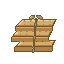
Hardtack Ration (2 Flour and 1 Crystallised Salt, Cook 1). It goes into the Sandwich, and it feeds a little on its own (4 hunger). Flour is made from two Wheat at an ordinary crafting table, by anyone.Dish quality: Normal, Fine, Superb¶
The fish in a dish decide its quality at the moment you cook it:
- Each fish you catch has a size, which sits somewhere in its species' size range, from the smallest (0 %) to the biggest (100 %). The dish takes the average over all the fish in it.
- An average of 50 % or more makes a Fine dish (green in the tooltip). 80 % or more makes a Superb dish (gold). Anything lower is Normal.
- A dish with no measured fish in it (fruit, eggs, crops, creatures) is always Normal, unless a Cook perk upgrades it (see Level perks).
What quality changes when you eat the dish:
| Quality | Extra hunger | Meal buffs last | Doriki from the dish |
|---|---|---|---|
| Normal | +0 | ×1 (10 minutes) | ×1 |
| Fine | +2 | ×1.25 (12:30) | ×1.5 |
| Superb | +4 | ×1.5 (15 minutes) | ×2 |
Quality also raises the price at the Travelling Cook (see Selling).
What a dish gives¶
A dish's tooltip lists its hunger, its saturation, any Cola, its Doriki, and each buff with its duration. Quality is already counted in.
- Hunger and saturation grow with the recipe's Cook level. Hunger runs from 6 at level 1 to a full bar (20) at level 50, and saturation rises with it. The two drinks feed 70 % as much as a dish of the same level.
- Appetite (10 minutes): more XP in one trade. The trade depends on the dish: Fisher's, Hunter's, Farmer's, Cook's or Inventor's Appetite. It gives +15 % (I), +30 % (II) or +45 % (III). It raises the XP you earn; it never grants XP by itself.
- Fighting Spirit (10 minutes): +5 % Doriki from fights per level of the buff, from I (+5 %) to V (+25 %). Almost every dish gives it. A stronger Fighting Spirit replaces a weaker one.
- Well Fed (10 minutes), from the hearty dishes only: hunger drains 25 % slower for dishes of Cook level 25 to 39 (Well Fed I), and 50 % slower for dishes from Cook level 40 (Well Fed II).
-
Doriki: most dishes give a little Doriki, but only while your Doriki is below the dish's cap, and never past it: food gets you started, fighting takes you further. A Fine dish gives ×1.5 and a Superb dish ×2, still capped. Past the cap, the tooltip reads "No more Doriki past N".
Doriki tier Per dish Only while your Doriki is below First taste 1 +5 250 +25 2 +10 750 +50 3 +15 1 500 +75 4 +20 2 500 +100 5 +25 4 000 +125 -
First taste: the first time you eat each dish, you get five times its tier's Doriki. This ignores the cap and happens once per dish; a gold chat message counts how many dishes you have tasted (out of 23).
- The Special Pirate Soda also refills 75 Cola for cyborgs.
Eating rules¶
- Dishes are ordinary food: you eat them when you are hungry. The two drinks (Special Drink, Special Pirate Soda) are drunk.
- One Appetite at a time: the next dish's Appetite replaces the last. Fighting Spirit and Well Fed stay alongside it, and so does a Musician's tune.
- Quality and Chef's touch lengthen every buff the meal gives, Well Fed and the Cotton Candy's Speed included.
Every dish¶
Hunger and durations are for a Normal dish without Chef's touch; every buff lasts 10 minutes unless noted. Doriki reads "per dish / cap / first taste".
| Dish | Cook level | Hunger | Appetite | Fighting Spirit | Also | Doriki |
|---|---|---|---|---|---|---|
| Broiled Killifish | 1 | 6 | Fisher's I (+15 %) | I (+5 %) | — | +5 / 250 / +25 |
| Hardtack Ration | 1 | 4 | — | — | — | none |
| Angel Omelette | 3 | 7 | Farmer's I (+15 %) | I (+5 %) | — | +5 / 250 / +25 |
| Rice Cracker | 6 | 8 | Inventor's I (+15 %) | II (+10 %) | — | +5 / 250 / +25 |
| Wild Grass Pasta | 8 | 8 | Farmer's I (+15 %) | II (+10 %) | — | +10 / 750 / +50 |
| Special Drink (drink) | 10 | 6 | Hunter's I (+15 %) | II (+10 %) | — | +10 / 750 / +50 |
| Seagull Bone Soup | 12 | 9 | Fisher's II (+30 %) | II (+10 %) | — | +10 / 750 / +50 |
| Mock Cherry Pie | 15 | 10 | Cook's I (+15 %) | III (+15 %) | — | +10 / 750 / +50 |
| Special Pirate Soda (drink) | 15 | 7 | Inventor's I (+15 %) | III (+15 %) | refills 75 Cola | +10 / 750 / +50 |
| Fried Scorpion | 16 | 10 | Hunter's I (+15 %) | I (+5 %) | — | none |
| Simmered Ecrevisse | 18 | 11 | Fisher's II (+30 %) | III (+15 %) | — | +15 / 1 500 / +75 |
| Sandwich | 20 | 12 | Hunter's II (+30 %) | III (+15 %) | — | +15 / 1 500 / +75 |
| Cotton Candy | 22 | 12 | Hunter's I (+15 %) | — | Speed I for 0:30 | none |
| Horrific Pear Tart | 25 | 13 | Cook's II (+30 %) | IV (+20 %) | Well Fed I | +15 / 1 500 / +75 |
| Cactus Steak | 25 | 13 | Inventor's II (+30 %) | IV (+20 %) | Well Fed I | +15 / 1 500 / +75 |
| Fruit Macadonia | 30 | 14 | Farmer's II (+30 %) | II (+10 %) | Well Fed I | +20 / 2 500 / +100 |
| Shark Sushi | 32 | 15 | Fisher's II (+30 %) | IV (+20 %) | Well Fed I | +20 / 2 500 / +100 |
| Large Mushroom Salad | 35 | 16 | Cook's II (+30 %) | IV (+20 %) | Well Fed I | +20 / 2 500 / +100 |
| Spicy Miso Shark's Fin | 36 | 16 | Cook's II (+30 %) | IV (+20 %) | Well Fed I | +20 / 2 500 / +100 |
| Stamina Stew | 38 | 17 | Farmer's II (+30 %) | IV (+20 %) | Well Fed I | +20 / 2 500 / +100 |
| Sashimi Assortment | 40 | 17 | Fisher's III (+45 %) | V (+25 %) | Well Fed II | +25 / 4 000 / +125 |
| Sky Fish Sautee | 40 | 17 | Fisher's III (+45 %) | V (+25 %) | Well Fed II | +25 / 4 000 / +125 |
| Lover's Lunch | 44 | 18 | Cook's III (+45 %) | V (+25 %) | Well Fed II | +25 / 4 000 / +125 |
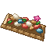 Delicacy Assortment |
45 | 19 | Fisher's III (+45 %) | V (+25 %) | Well Fed II | none |
| Sky Island Lunch | 46 | 19 | Hunter's III (+45 %) | V (+25 %) | Well Fed II | +25 / 4 000 / +125 |
| Meat-Lover's Delight | 47 | 19 | Hunter's III (+45 %) | V (+25 %) | Well Fed II | none |
| Dinosaur Steak | 48 | 19 | Fisher's III (+45 %) | V (+25 %) | Well Fed II | +25 / 4 000 / +125 |
| Roasted Meat Festival | 49 | 20 | Farmer's III (+45 %) | V (+25 %) | Well Fed II | none |
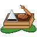 Pirate's Lunch |
50 | 20 | Hunter's III (+45 %) | V (+25 %) | Well Fed II | +25 / 4 000 / +125 |
Five dishes without Doriki
The Fried Scorpion, the Cotton Candy, the Delicacy Assortment, the Meat-Lover's Delight and the Roasted Meat Festival give no Doriki and no first-taste bonus, which is why the first-taste counter stops at 23. The Cotton Candy and the Fried Scorpion also lack the Cook's lines (hunger, Doriki, buffs) in their tooltips, and they do not count toward the Gourmet advancement.
Level perks¶
| Level | Perk | What it does |
|---|---|---|
| 10 | "10% chance a dish comes out one quality higher" | at the Kitchen, a dish comes out one quality higher 10 % of the time (Normal becomes Fine, Fine becomes Superb); this works on dishes with no fish too |
| 25 | "Your dishes' buffs last 25% longer" | every dish you cook at the Kitchen keeps its buffs 25 % longer; its tooltip says "Chef's touch: buffs last 25% longer". This stacks with quality: a Superb dish with Chef's touch gives buffs for 10 minutes × 1.5 × 1.25 = 18:45 |
| 40 | "25% chance a dish comes out one quality higher" | the quality upgrade chance becomes 25 % (it replaces the level 10 perk's 10 %) |
The recipes¶
Every Kitchen recipe, with the Cook level that unlocks it and the XP it pays:
| Makes | Level | XP | Ingredients |
|---|---|---|---|
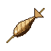 Broiled Killifish |
1 | 12 | |
| Hardtack Ration | 1 | 12 | 2 × 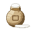 Flour, Crystallised Salt |
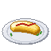 Angel Omelette |
3 | 16 | 2 × 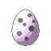 Mystery Egg, 2 ×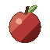 Red Fruit |
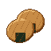 Rice Cracker |
6 | 22 | 2 × 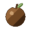 Brown Fruit |
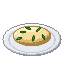 Wild Grass Pasta |
8 | 26 | 2 × any small flowers, 3 × Bitter Grass |
| Special Drink | 10 | 30 | 2 × 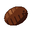 Coconut,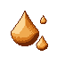 Sweet Sap, 3 × Blue Fruit |
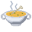 Seagull Bone Soup |
12 | 34 | |
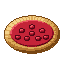 Mock Cherry Pie |
15 | 40 | 3 × Red Fruit, Flour, 2 × Mystery Egg |
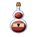 Special Pirate Soda |
15 | 40 | Brown Fruit, 2 × Blue Fruit, 3 × Coconut |
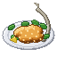 Fried Scorpion |
16 | 42 | 2 × |
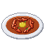 Simmered Ecrevisse |
18 | 46 | 3 × |
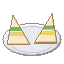 Sandwich |
20 | 50 | 2 × Flour, 3 × Mystery Egg, Hardtack Ration |
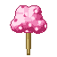 Cotton Candy |
22 | 54 | Sweet Sap, 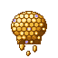 Sleep Honey, 3 × |
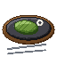 Cactus Steak |
25 | 60 | 3 × 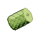 Cactus Pulp, Cactus Flower, Red Fruit |
| Horrific Pear Tart | 25 | 60 | 3 × 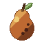 Horrific Pear, Flour, 3 × |
| Fruit Macadonia | 30 | 70 | 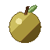 Golden Fruit, Blue Fruit, Red Fruit, Brown Fruit |
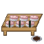 Shark Sushi |
32 | 74 | |
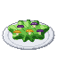 Large Mushroom Salad |
35 | 80 | 5 × Mystery Mushroom, Golden Matsutake, 3 × Horrific Pear |
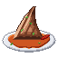 Spicy Miso Shark's Fin |
36 | 82 | |
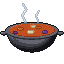 Stamina Stew |
38 | 86 | 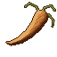 Wilted Carrot, 3 × Mystery Mushroom |
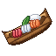 Sashimi Assortment |
40 | 90 | 2 × |
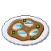 Sky Fish Sautee |
40 | 90 | |
| Lover's Lunch | 44 | 98 | 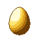 Golden Egg, 3 × Golden Matsutake |
| Delicacy Assortment | 45 | 100 | 3 × |
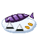 Sky Island Lunch |
46 | 102 | |
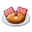 Meat-Lover's Delight |
47 | 104 | 2 × |
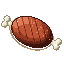 Dinosaur Steak |
48 | 106 | 2 × |
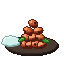 Roasted Meat Festival |
49 | 108 | 2 × 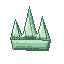 Sea King Head Crest, |
| Pirate's Lunch | 50 | 110 |
Selling¶
The Travelling Cook buys every cooked dish and sells the basic ones (up to Cook level 15). A Fine dish fetches 25 % more, a Superb one 50 % more. See Merchants and contracts.
Advancements¶
The Cook tab ("Cook the islands' dishes at the Kitchen") holds:
- Galley (build a Kitchen) and Apprentice Cook (reach Cook level 5);
- one advancement per notable dish: Broiled Killifish, Angel Omelette, Seagull Bone Soup, Bottoms Up (Special Drink or Special Pirate Soda), Candy Floss (Cotton Candy), Crunch (Fried Scorpion), Horrifically Good (Horrific Pear Tart), Made with Love (Lover's Lunch), Sashimi Boat and Stamina to Spare (Stamina Stew);
- Superb!, for cooking a dish of Superb quality;
- three challenges: The Captain's Table (cook a Pirate's Lunch), Gourmet (eat each of the 26 dishes whose tooltips show the Cook's lines) and The Sea King's Table (cook the Delicacy Assortment, the Meat-Lover's Delight and the Roasted Meat Festival).